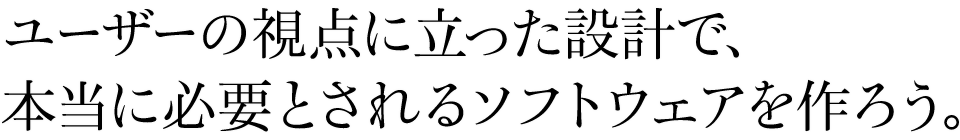
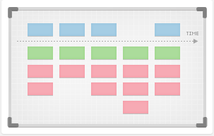

アイデアを整理できます
欲しい物はわかっているけどどうすればいいのかわからない、関係者が多くて話し合いが進まない…。そんな悩みを解決できます。
アイデアを整理することで「ユーザーが本当に必要なもの」を見つけることができ、目標を絞った無駄のない開発をすることができます。
わかりやすい設計図ができあがります
「こんなのあったらいいな」と思っているシステムの設計図を、誰でも理解できるわかりやすい形で作成できます。従来のように「要件定義書を見ても何ができるかわからない」という状況にはなりません。
短期間で終わります
ワークショップ形式で問題解決に必要な物を整理していくため、短期間、低コストで素早く要件を収集整理し、関係者で合意できます。
ユーザーストーリーについて

ユーザーストーリーとは、ソフトウェアの要求を整理する方法のひとつです。
利用者(ユーザー)を中心に物事を考えるため、本当に必要とされる物、本質的なものを見つけることができます。
形式的なものではなく、会話をしながら、身近にあるものを使ってカジュアルに始めることができます。
概要の説明とヒアリング
全体の進め方とユーザーストーリーについて説明をしたうえで、どんなプロジェクトでどんなソフトウェアが必要とお考えかヒアリングします。
ディスカッション
参加者全体でフリーディスカッションをしながら、やりたいこと、実現したいものをユーザーストーリーの形に書き出します。ストーリーの書き方や見つけ方は、随時コンサルタントがガイドしていきます。
ストーリーをマップに配置
書き出したユーザーストーリーを時系列に整理しながら、ソフトウェアの重要な利用シーンを明確にします。さらにストーリー全体をマップに配列し、必要十分な機能を提供しているかどうか確認します。不足があれば追加します。
優先順位をつけて完成
マップの形に並べたストーリーを比較しながら、優先順位をつけてストーリーマップを完成します。
ワークショップにかかる時間はどれくらいですか？
おおよそ半日くらいで終わります。大規模な場合は一回で終わらない場合もあります。
ワークショップはどこで行うのですか？
お客様のオフィスにて行います。弊社コンサルタントが、必要な道具を用意してお伺いします。
参加者は何人くらいですか？
お客様側からは、一般的に2～5人ほど参加していただくことが多いです。弊社コンサルタントは1～2名が参加いたします。
作ったマップはどうするのですか？
全体が見えるよう写真に収めて保存します。
あとでまた手を入れられるよう、そのままの状態で保管していただくこともできます。
- ※不明な点などありましたら、お気軽にご連絡ください。
永和システムマネジメントは福井に本社を置くSIベンダです。
2002年に東京支社を開設してから、アジャイル開発を軸に変化を抱擁するITソリューションを提供することに力を入れています。社内の有志による草の根活動をきっかけに2005年頃からRubyへの取り組みを始めました。現在では様々なプロジェクトでRubyを活用しています。
私たちは「お客さまに価値を提供し続けるシステム」を構築します。お客様の環境やビジネスの変化に適応するシステムを、お客さまと一緒に育てていきたいと思っています。
私たちは、ソフトウェア開発のプロフェッショナルとしての誠実な態度と、アジャイル開発のアプローチを通じてこれを達成します。そして、そのための手段としてオブジェクト指向スクリプト言語Rubyが有効だと信じて行動しています。
過去10年間で、私たちは70以上のプロジェクトを成功させてきました。そのほとんどのプロジェクトがアジャイル開発手法を何らかのかたちで必ず採用しており、半数のプロジェクトでRubyを使っています。OpenID 認証サービスをわずか6ヶ月で稼働させました。PHPで書かれたBtoC CGMサービスをRubyでリプレイスし、性能と保守性を向上させました。プロジェクトの特性上、具体的な名前を挙げられないものも多いですが、情報を公開可能なものについては事例としてお伝えしていきます。
また、私たちはRubyコミュニティと良好な関係を築くことにも心を砕いており、Ruby会議には初めて開催された2006年からさまざまなかたちで支援をおこない、地域Ruby会議にはプロジェクト初期から深くかかわっています。Rails勉強会@東京をはじめ、さまざまな勉強会やコミュニティのミートアップ開催のために東京支社の会議室も提供しています。
私たちはお客様にまったく新しいビジネスのアイデアを提供したり、お客様のビジネスの成功を約束することはできません。しかし技術的な問題を取り除き、お客様のやりたいことを素早く確実に高品質で実現することができます。私たちはお客様のビジネスの決定にシステムを素早く対応させたり、利用者の増加に対してシステムをスケールさせることができます。プロジェクトを円滑に進め、成功させるためのプラクティスを私たちはもっています。
私たちのアジャイル開発は、「お客様と弊社がハッピーになる」ことを目的とします。
日本のアジャイル開発は、一昔前のイメージ(小規模・研究開発でしか使えない)から大きく様変わりし、広く認知されるようになりました。
しかし、広く普及したがゆえに、アジャイル開発導入の目的や価値観は、多様化しています。なかには、本来のアジャイル開発の良さを失っている導入もあるかもしれません。
私たちのアジャイル開発は、「お客様と弊社がハッピーになる」ことを目的とします。私たちはこの10年間、アジャイル開発で多くの信頼と実績を築いてきました。それは、アジャイル開発の良さを真摯に守り、取り組んできたことを、お客様からご評価頂いたからです。
私たちのアジャイル開発は、決して手法や方法論ではまとめきれない、実践知や価値観、それを届ける人で構成されています。
私たちは、アジャイル開発でお客様と一緒に、「お客様と弊社のハッピー」を作り上げます。
agile-workshop@esm.co.jp
こちらのアドレスに、貴社名、お名前、参加人数を記載の上、ご連絡ください。
皆様のご参加を心よりお待ちしております。